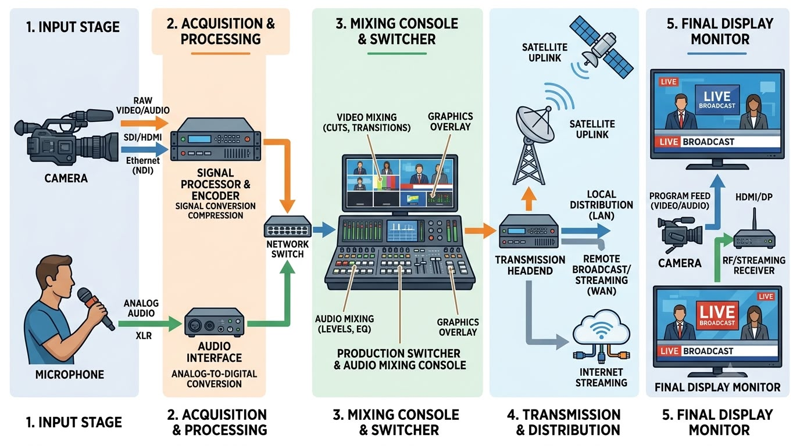
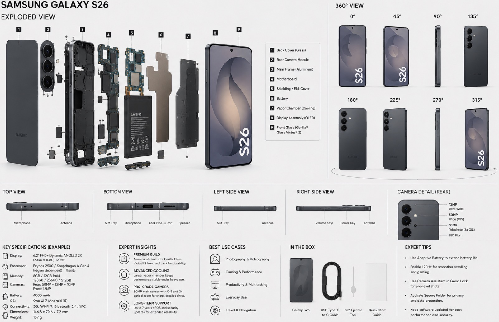
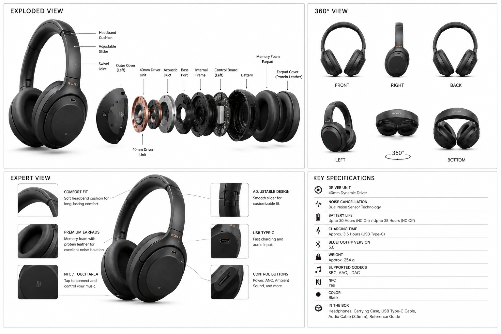
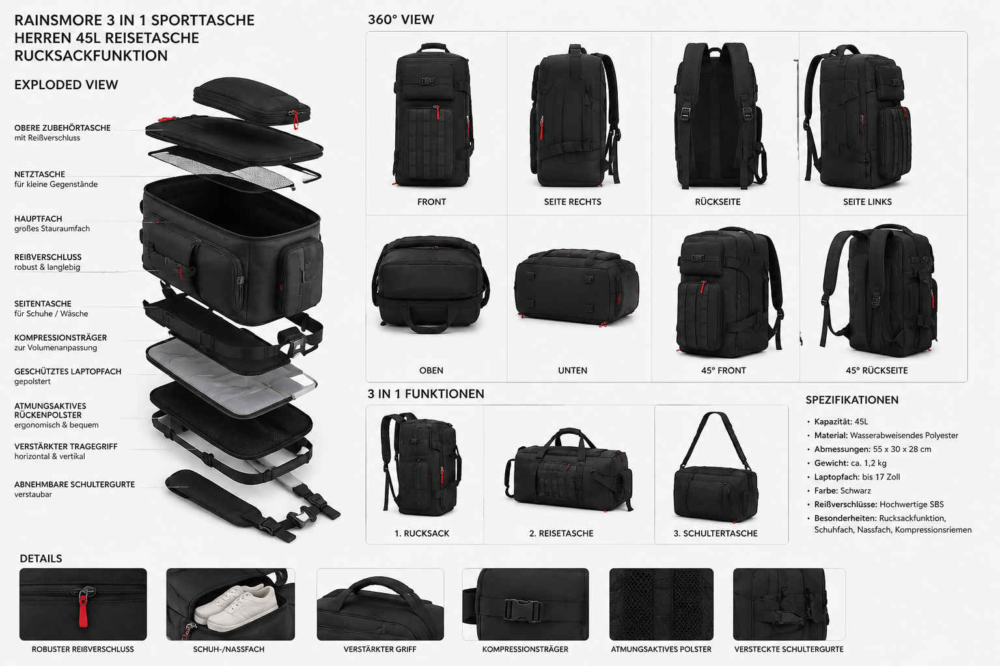
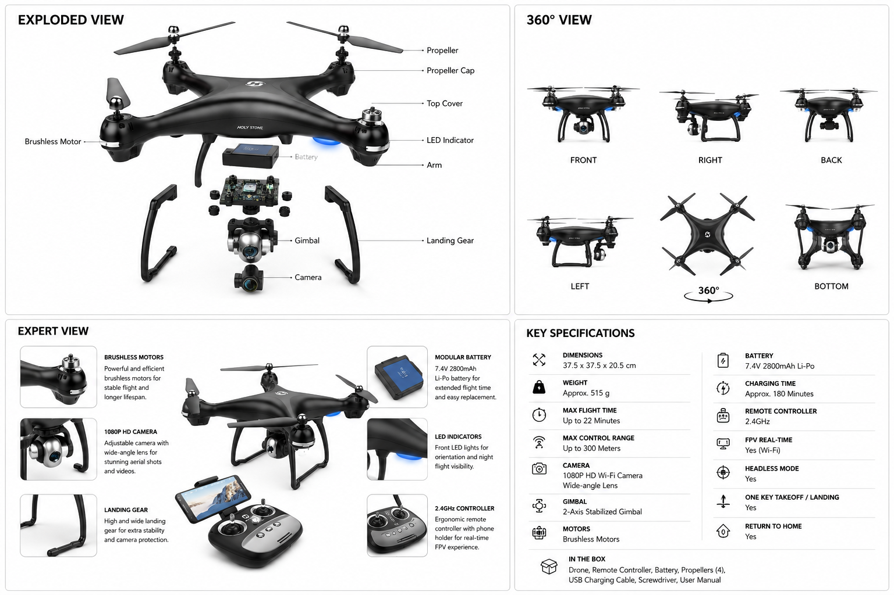
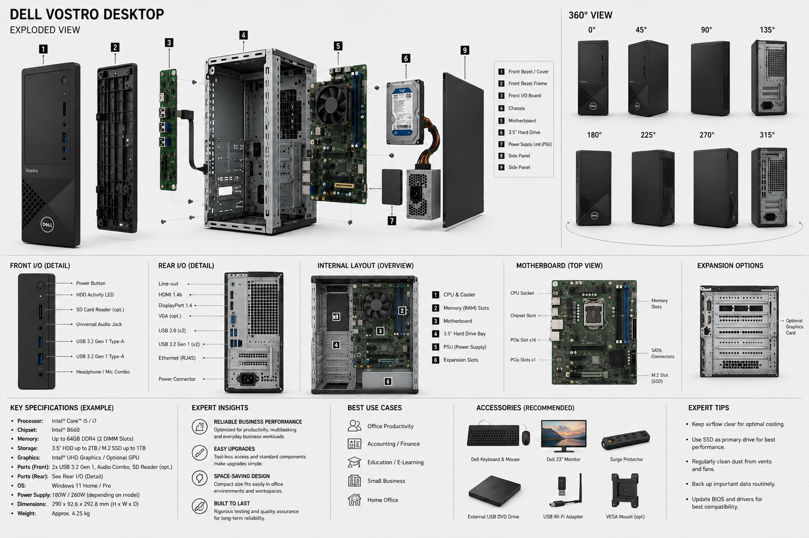

Schul-Informationen
Schüler: Leon Wyppych
Jahrgang: BGT25b (2026/2027)
Schule: RBZ Technik (Regionales Berufsbildungszentrum)

Inhaltsverzeichnis
- 1. Berufliche Informatik & Elektrotechnik
- 2. Medientechnik & Webdesign
- 3. Gesellschaft, Medien & Kultur (GMK)
- 4. Deutsch (Literatur)
- 5. Physik
- 6. Englisch
- 7. Wirtschaft & Recht
- 8. Chemie
- 9. Französisch
- 10. Bildergalerie (Alle Dokumente)
1. Berufliche Informatik & Elektrotechnik
1.1 IT-Grundlagen & Werkzeuge
- Netzwerkweg: Handy → Drucker → WLAN → Provider → Web → Server
- Calc (Tabellenkalkulation): Datum, Kalender, Sonderzeichen, Rechnungen, Feiertage, Schriftart, Short-Commands, Maße & Einheiten/Units/Skale.
- Writer (Textverarbeitung): Formatierung, Titel-, Untertitel-, Normaltext-, Fußzeile-, Kopfzeile- & Randformatierung.
1.2 Elektrotechnik & Bauteile
| Bauteil (Fachbegriff) | Funktion & Beschreibung | Einheit / Merkmal |
|---|---|---|
| Widerstand (Resistor) | Begrenzt den Stromfluss, setzt Energie in Wärme um. | Ohm (Ω), Farbcode |
| Kondensator (Capacitor) | Speichert elektrische Energie in einem Feld, glättet Spannungen. | Farad (F), gepolt/ungepolt |
| Diode | Lässt Strom nur in eine Richtung durch (Gleichrichter). | Anode (+), Kathode (-) |
| LED | Leuchtdiode, wandelt Strom in Licht um. Benötigt Vorwiderstand. | Anode (lang), Kathode (kurz) |
| Spule (Induktivität) | Speichert Energie in einem Magnetfeld, widersteht Stromänderungen. | Henry (H) |
| Transistor | Elektronischer Schalter oder Verstärker. | Basis, Kollektor, Emitter |
1.3 Arduino Uno R3
- Digital-Pins (0-13): Für digitale Ein-/Ausgänge. Tilde (~) bedeutet PWM-fähig.
- Analog-Pins (A0-A5): Für Sensoren (0-5V).
- Stromversorgung: 5V, 3.3V, GND.
Code-Beispiel: Blinkende LED
const int ledPin = 13;
void setup() {
pinMode(ledPin, OUTPUT);
}
void loop() {
digitalWrite(ledPin, HIGH);
delay(1000);
digitalWrite(ledPin, LOW);
delay(1000);
}1.4 Datenbanken & SQL
- ER-Modell: Entitäten (Tabellen), Attribute (Spalten), Primärschlüssel (PK), Fremdschlüssel (FK), Kardinalitäten (1:1, 1:n, m:n).
- Normalformen: 1. NF (Atomarität), 2. NF (Vollständige Abhängigkeit vom PK), 3. NF (Keine transitiven Abhängigkeiten).
- SQL Basics:
SELECT,FROM,WHERE,ORDER BY,GROUP BY,HAVING. - Joins:
INNER JOIN,LEFT JOIN,RIGHT JOIN,FULL JOIN.

2. Medientechnik & Webdesign
2.1 Systemüberblick Medientechnik (12. Klasse)

1. Sicherheit
- IT-Sicherheit: SSL/TLS, RBAC (Role-Based Access Control), Firewall.
- Arbeitsschutz: DGUV 3, Safeties (Sicherungsseile), Kabelbrücken.
2. Funktion & Systemarchitektur
Signalfluss: Signalerfassung (Kamera, Mikrofon, Video) → Signalverarbeitung (Mischpult) → Übertragung → Signalerfassung / Ausgabe (Monitor, Web).
3. Rechte & Lizenzmodelle
- Urheberrecht (UrhG): Schöpfungshöhe, Urheberpersönlichkeitsrecht.
- Lizenzen: Einfaches Recht, Ausschließliches Recht, Creative Commons (CC-BY, CC-NC).
4. Nutzen & Zukunftstrends
- Zwecke: Bildung (E-Learning), Marketing (UX), Unterhaltung (Virtual Events).
- Trends: Virtual Reality (VR), Augmented Reality (AR), KI im Workflow.
2.2 Live-Broadcasting Workflow
| Prozessstufe | Komponenten & Signale | Funktion / Beschreibung |
|---|---|---|
| 1. Input Stage | Kamera (RAW Video/Audio, SDI/HDMI, Ethernet/NDI), Mikrofon (Analog Audio, XLR) | Erfassung der physischen Bild- und Tonsignale am Aufnahmeort. |
| 2. Acquisition & Processing | Signal Processor & Encoder, Audio Interface (A/D-Wandlung), Network Switch | Konvertierung analoger Signale in digitale Daten, Kompression und Weiterleitung im Netzwerk. |
| 3. Mixing Console & Switcher | Production Switcher, Video Mixing (Cuts, Transitions), Audio Mixing (Levels, EQ), Graphics Overlay | Zusammenführung aller Quellen, Mischen von Bild/Ton, Einfügen von Grafiken und Bauchbinden. |
| 4. Transmission & Distribution | Transmission Headend, Satellite Uplink, Local Distribution (LAN), Remote Broadcast (WAN), Internet Streaming | Verteilung des fertigen Programmsignals über Satellit, IP-Netzwerke oder Streaming-Server. |
| 5. Final Display Monitor | Endgeräte, TVs, Program Feed, HDMI/DP, Receiver | Wiedergabe des Live-Signals auf Zielmonitoren und Kundengeräten. |
2.3 Kommunikationsmodelle
- Vier-Ohren-Modell (Schulz von Thun): Sachinhalt, Selbstkundgabe, Beziehungshinweis, Appell.
- Sender-Empfänger-Modell (Shannon & Weaver): Linearer, technischer Prozess (Kodierung, Kanal, Dekodierung, Störquellen).
- 5 Axiome (Watzlawick): Man kann nicht nicht kommunizieren, etc.
- Eisbergmodell (Freud): 20% Sachebene (sichtbar), 80% Beziehungsebene (unsichtbar).
- Transaktionsanalyse (Berne): Eltern-Ich, Erwachsenen-Ich, Kind-Ich.
- Organon-Modell (Bühler): Ausdruck, Appell, Darstellung.
2.4 Farbmodelle im Webdesign
| Farbmodell | Format / Syntax | Beispiel | Eigenschaften |
|---|---|---|---|
| HEX | #RRGGBB | #FF5733 | Standard-Code im Webdesign. |
| HEX (mit Alpha) | #RRGGBBAA | #FF573380 | Erweiterung um 2 Stellen für Transparenz. |
| RGB | rgb(R, G, B) | rgb(255, 87, 51) | Lichtintensität (0–255). |
| RGBA | rgba(R, G, B, A) | rgba(255, 87, 51, 0.5) | Mit Alpha-Wert (0.0 bis 1.0) für Transparenz. |
| HSL / HSLA | hsl(H, S%, L%) | hsl(9, 100%, 60%) | Farbton, Sättigung, Helligkeit. |
| OKLCH | oklch(L C H) | oklch(0.65 0.24 35) | Wahrnehmungsgetreues Modell für HDR/P3. |
3. Gesellschaft, Medien & Kultur (GMK)
3.1 Politik (August 2026)
- International: Diplomatische Eskalation um den Iran (Trump), Totale Sonnenfinsternis über Westeuropa.
- National: Personalwechsel im Bundesverkehrsministerium (Schnieder → Bilger), Debatten um Nachrichtendienste.
- Regional (Kiel): LKA-Großeinsatz wegen Chemikalienfund in der Gutenbergstraße.
3.2 Bismarck & Imperialismus
- Kissinger Diktat (1877): Status quo erhalten, Koalitionen verhindern, England und Russland ausgleichen, Frankreich isolieren.
- Bündnispolitik: Dreikaiserabkommen (1873), Zweibund (1879), Dreibund (1882), Rückversicherungsvertrag (1887).
- Kolonialpolitik: Anfänglich skeptisch, später Erwerb von Kolonien (Deutsch-Südwestafrika, Togo, Kamerun, Deutsch-Ostafrika).
3.3 Parteien im Kaiserreich (1870-1890)
| Partei | Klientel (Wer?) | Ziele |
|---|---|---|
| Konservative (KP/DRP) | Schwerindustrielle, Beamte, Hochadel | Unterstützung Bismarcks, Aufrüstung. |
| Nationalliberale (NLP) | Unternehmer, Professoren | Freier Handel, Kolonien, Imperialismus. |
| Linksliberale (DFP) | Handwerker, Händler | Mehr Macht für den Reichstag, Bürgerrechte. |
| Zentrum | Katholiken | Schutz der Kirche, Föderalismus. |
| SPD/SAP | Industriearbeiter | Arbeiterrechte, Demokratie. |
4. Deutsch (Literatur)
4.1 Das Erdbeben in Chili (Heinrich von Kleist)
Inhalt: Jeronimo Rugera und Donna Josephe werden wegen verbotener Liebe bestraft. Ein Erdbeben zerstört die Stadt und rettet sie kurzzeitig. Im Tal finden sie Schutz, doch in der Kathedrale werden sie von einem fanatischen Mob getötet. Nur ihr Kind Philipp überlebt und wird von Don Fernando und Donna Elvire aufgenommen.
4.2 Die Marquise von O... (Heinrich von Kleist)
Inhalt: Die Marquise wird von Graf F... gerettet, der sich jedoch unbemerkt an ihr vergeht, als sie ohnmächtig ist. Sie wird schwanger, der Vater verstößt sie. Durch eine Zeitungsanzeige sucht sie den Vater. Der Graf gesteht, sie heiraten zunächst pro forma, finden aber später durch seine Reue und Fürsorge zueinander.
4.3 Der zerbrochene Krug (Heinrich von Kleist)
Inhalt: Dorfrichter Adam muss den Fall eines zerbrochenen Kruges verhandeln. Es stellt sich heraus, dass er selbst der Täter ist. Er war nachts bei Eve, um sie mit einem gefälschten Attest zu erpressen. Als Ruprecht auftauchte, floh Adam und zerbrach den Krug. Am Ende wird Adam überführt und flieht.
5. Physik
5.1 Mechanik & Energie
- Mechanische Arbeit: W = F · s (Kraft mal Weg). Einheit: Joule (J) oder Newtonmeter (Nm).
- Kinetische Energie: Ekin = ½ · m · v²
- Potentielle Energie: Epot = m · g · h
- Energieerhaltungssatz: Energie kann weder erzeugt noch vernichtet, nur umgewandelt werden.
- Goldene Regel der Mechanik: Was an Kraft gespart wird, muss an Weg zugesetzt werden.
5.2 Gravitation & Elektrische Felder
- Gravitationsgesetz (Newton): FG = G · (m1 · m2) / r²
- Ortsfaktor (g): g = (G · ME) / RE² ≈ 9,81 m/s² (an der Erdoberfläche).
- Coulombsches Gesetz: Fel = (1 / (4πε0)) · ((q1 · q2) / r²)
5.3 Formelsammlung & Einheiten
| Größe | Formel | Einheit |
|---|---|---|
| Kraft (F) | F = m · a | Newton (N) |
| Energie / Arbeit (E, W) | W = F · s | Joule (J) = N·m |
| Leistung (P) | P = W / t | Watt (W) = J/s |
| Druck (p) | p = F / A | Pascal (Pa) = N/m² |
6. Englisch
6.1 AI in Job Interviews
Pros: No bias, cheaper, works continuously, can be less intimidating.
Cons: Systemic inequality (wealth bias), lacks human interaction/judgment, candidates can fake responses, no soft skills assessment.
Conclusion: AI should support, but humans should make the final decision.
6.2 Mediation (Team Performance)
Rules: German to English, no personal opinion, simple present, generalization, no specific quotes.
Content: Shared financial bonuses improve group speed and success. Traditional managers think bonuses only help routine tasks. An escape room experiment showed teams solve complex tasks faster with shared rewards. Financial rewards do not harm inner motivation if tasks are interesting.
7. Wirtschaft & Recht
7.1 Streik
Definition: Planmäßige Arbeitsniederlegung von gemeinsam handelnden Arbeitnehmern zur Durchsetzung von Zielen, organisiert von der Gewerkschaft.
Rechtmäßigkeit: Nur als letztes Mittel (Verhältnismäßigkeit), muss tariflich regelbare Ziele haben, darf nicht gegen die Friedenspflicht verstoßen, Träger muss eine Gewerkschaft sein.
7.2 Tarifverträge
- Lohn-/Gehaltstarifvertrag: Regelt Löhne/Gehälter (kurzfristig).
- Manteltarifvertrag: Regelt allgemeine Bedingungen (Arbeitszeit, Urlaub, Kündigung) (mehrjährig).
- Funktionen: Schutzfunktion (Mindeststandards), Ordnungsfunktion (Planungssicherheit), Friedenspflicht (keine Streiks während der Laufzeit).
8. Chemie
8.1 Basen & alkalische Haushaltsmittel
| Stoff | Formel | Verwendung |
|---|---|---|
| Natriumhydroxid (Natronlauge) | NaOH | Kraftvoller Rohrreiniger |
| Natriumcarbonat (Waschsoda) | Na2CO3 | Reinigen, Einweichen, Entkalken |
| Natriumhydrogencarbonat (Natron) | NaHCO3 | Mildes Scheuermittel, Backtriebmittel |
| Ammoniak (Salmiakgeist) | NH3 | Glas- und Allzweckreiniger |
9. Französisch
9.1 Saint-Germain-des-Prés (Fragen)
| Frage / Question | Réponse en français | Deutsche Übersetzung |
|---|---|---|
| C'est où ? | Il se trouve au centre de Paris (sur la rive gauche), dans le 6e arrondissement. | Es befindet sich im Zentrum von Paris (am linken Seine-Ufer), im 6. Arrondissement. |
| C'est quoi ? | C'est un quartier historique et animé avec une vieille église, des galeries d'art et des cafés célèbres. | Es ist ein historisches und lebhaftes Viertel mit einer alten Kirche, Kunstgalerien und berühmten Cafés. |
| Tu peux faire quoi ? | Tu peux te promener dans les rues, visiter l'église Saint-Germain-des-Prés, prendre des photos et boire un café en terrasse. | Du kannst durch die Straßen spazieren, die Kirche besichtigen, Fotos machen und einen Kaffee auf der Terrasse trinken. |
9.2 Vokabeln & Redewendungen
Orientierung & Ortsangaben
| Französisch | Deutsch |
|---|---|
| se trouver | sich befinden / liegen |
| au centre (de) | im Zentrum (von) |
| la rive gauche / la rive droite | das linke Seine-Ufer / das rechte Seine-Ufer |
| le quartier | das Stadtviertel |
Orte, Sehenswürdigkeiten & Adjektive
| Französisch | Deutsch |
|---|---|
| un musée (m.) | ein Museum |
| un parc (m.) | ein Park |
| une église (f.) | eine Kirche |
| un monument (m.) | ein Denkmal |
| grand(e) / petit(e) | groß / klein |
| beau / belle | schön |
10. Bildergalerie & Dokumente
Hier sind alle Bilder und Dokumente aus dem art-Ordner übersichtlich zusammengefasst.
Portfolio & Fotografie




Dokumente & Diagramme




Quellenverzeichnis
- Unterrichtsmaterialien & Mitschriften: BGT25b (2026/2027), RBZ Technik.
- Grafiken & Diagramme (Ordner: art/): Alle im Ordner
art/befindlichen Bilder (Portfolio, Dokumente, Diagramme). - Literatur (Deutsch): Heinrich von Kleist (Das Erdbeben in Chili, Die Marquise von O..., Der zerbrochene Krug).
- Nachrichtenquellen (GMK): Tagesschau, ZDFheute, Presseportal LKA SH, SAT.1 Regional (August 2026).